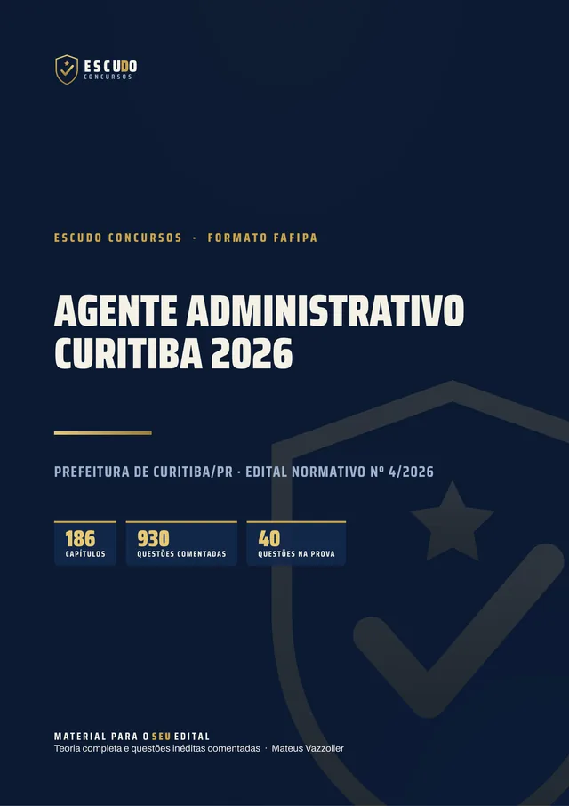
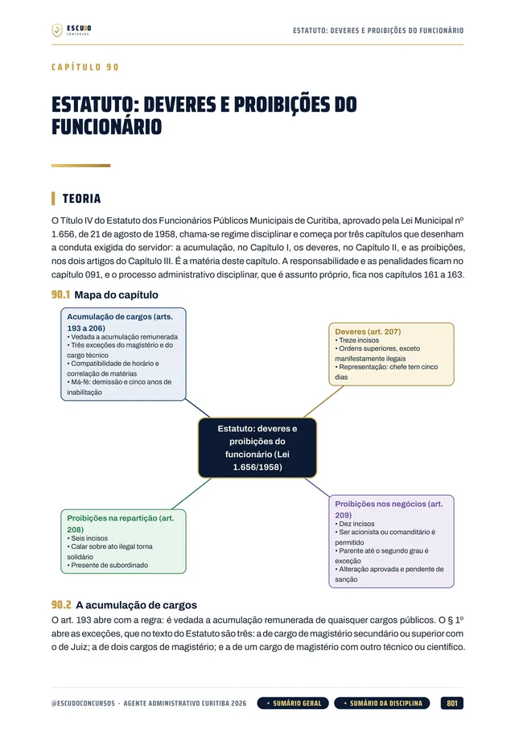
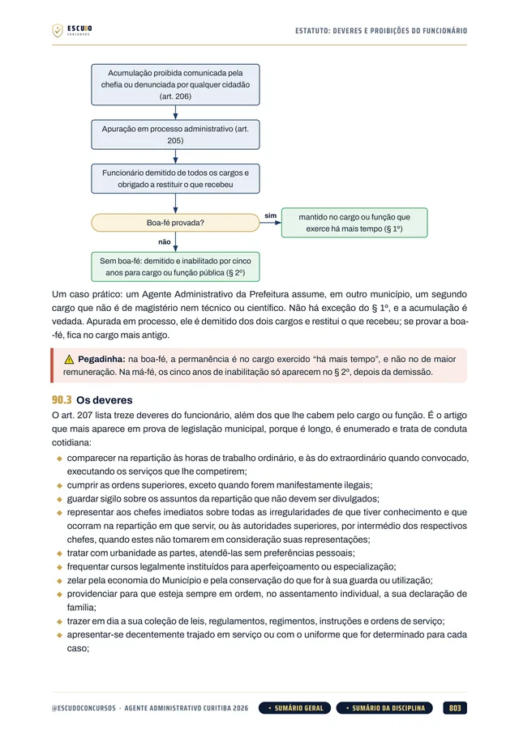
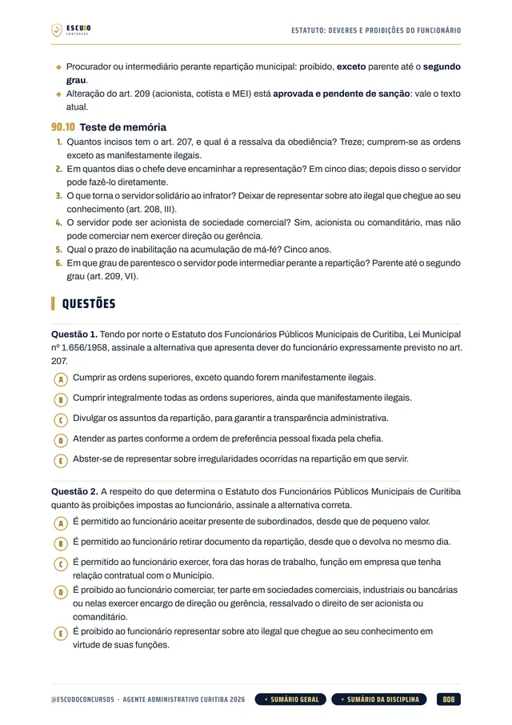
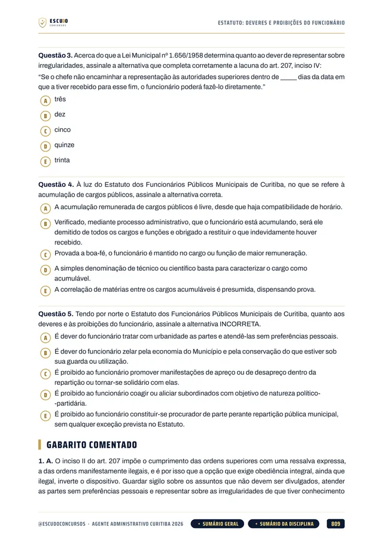

Simulado 1
O ponto de partida
Para medir onde você está logo de início e ajustar o estudo enquanto ainda dá tempo.
Liberado na compra


930questões
comentadas
Prefeitura de Curitiba/PR 2026 · Apostila em PDF
São 250 vagas para Agente Administrativo na Prefeitura de Curitiba, e os Conhecimentos Específicos valem 50 dos 100 pontos. O seu material cobre o programa inteiro, já com as retificações do edital? Curso feito a partir do Edital Normativo nº 4/2026, item por item, com questões de A a E, como na prova, e gabarito comentado.
de R$ 47 por
R$37
com o cupom CURITIBA37 até 30/11/2026. Pelo botão, o cupom já vai preenchido.
R$47
Curso completo, com acesso imediato.
O concurso
O Concurso Público da Prefeitura de Curitiba/PR (Edital Normativo nº 4/2026, publicado em 21 de setembro de 2026 e retificado em 7 e em 15 de outubro) abriu 250 vagas para Agente Administrativo, mais cadastro de reserva: 202 de ampla concorrência, 13 para pessoas com deficiência e 35 para pessoas pretas, pardas e indígenas. O vencimento é de R$ 3.027,73 para 40 horas semanais, com auxílio-transporte, auxílio-alimentação e plano de saúde, e o cargo exige Ensino Médio completo. As inscrições vão de 7 de outubro a 5 de novembro de 2026, com taxa de R$ 100,00, e pedem cadastro prévio no portal e-Cidadão da Prefeitura.
A prova da Fundação FAFIPA é em 13 de dezembro de 2026: fase única, 4 horas e 40 questões de 5 alternativas, de (A) a (E), com uma só correta. Não há prova física, psicológica nem investigação social.
Passa quem fizer no mínimo 60 dos 100 pontos, ou seja, 24 acertos, e não existe nota mínima por área. Os 20 Conhecimentos Específicos valem 50 pontos, metade da prova, e a Legislação outros 12,5: juntos, 62,5% da nota é matéria jurídica e administrativa.
O programa do Anexo II tem Literatura Brasileira em Língua Portuguesa, Linux Ubuntu e inteligência artificial generativa em Informática, e uma base de legislação municipal de Curitiba: Lei Orgânica, Estatuto dos Funcionários (Lei 1.656/1958) e Lei 7.671/1991, com a Lei 16.466/2024 nos Específicos. O curso cobre cada um desses itens.
| Área | Questões | Valor | Pontos |
|---|---|---|---|
| Língua Portuguesa | 5 | 2,50 | 12,50 |
| Raciocínio Lógico | 5 | 2,50 | 12,50 |
| Noções de Informática | 5 | 2,50 | 12,50 |
| Legislação | 5 | 2,50 | 12,50 |
| Conhecimentos Específicos | 20 | 2,50 | 50,00 |
| Aprovação com 60 pontos no total (24 acertos), sem nota mínima por área. | 40 | 100 |
O formato
Você estuda lendo, no seu ritmo, pela área de membros da Hotmart ou com os arquivos baixados. O curso foi feito a partir do Edital Normativo nº 4/2026, item por item, na ordem do conteúdo programático do Anexo II na versão retificada, com a legislação conferida no texto oficial vigente em outubro de 2026, pois o edital manda considerar a redação vigente à época de cada fase do certame (item 20.19).
Páginas reais do PDF
Toque numa página para ver em tamanho maior.




O que você recebe
Curso em PDF organizado em módulos pelas disciplinas do edital, com 1.797 páginas no padrão visual ESCUDO, para ler no computador, no tablet, no celular ou no app da Hotmart. Não há videoaulas.
186 capítulos cobrindo as áreas da prova: Língua Portuguesa e Literatura (30 capítulos), Raciocínio Lógico (26), Noções de Informática (23), Legislação (40) e Conhecimentos Específicos (67), mais a apresentação do curso.
930 questões inéditas com 5 alternativas, de (A) a (E), como na prova, todas com gabarito comentado: por que a correta está correta e onde está o erro de cada uma das outras quatro.
Legislação Municipal de Curitiba em 17 capítulos: Lei Orgânica do Município, Estatuto dos Funcionários Públicos (Lei 1.656/1958) e a organização do Executivo (Lei 7.671/1991), transcritos dos textos oficiais, mais a Constituição Federal nos artigos do edital (10 capítulos) e a Legislação Federal (13): improbidade com a Lei 14.230/2021, LAI, Lei 10.048/2000, ECA, LINDB e LGPD.
Conhecimentos Específicos em 67 capítulos, pelo programa do cargo: Administração Pública e Orçamento, atos, bens e serviços públicos, Lei 14.133/2021 (licitações e contratos), Lei Municipal 16.466/2024 (processo administrativo), PAD pelo Estatuto, Direito Constitucional, ética e atendimento (Lei 13.460/2017), Arquivologia (Lei 8.159/1991), redação oficial e métodos de pesquisa.
Língua Portuguesa e Literatura em 30 capítulos, com a Literatura Brasileira que o edital pede, e Noções de Informática em 23, com Windows 10 e 11, Linux Ubuntu, Word e Excel 2016, e-mail e nuvem, segurança e inteligência artificial generativa (ChatGPT, Copilot e Gemini).
Teoria com recursos para memorizar: mapa de cada capítulo, fluxogramas, esquemas, quadros de "pegadinha" e "não confunda", questão comentada passo a passo, revisão relâmpago e teste de memória no fim de cada capítulo, com caso prático na rotina de um servidor da Prefeitura de Curitiba.
Navegação clicável: do sumário você vai direto ao capítulo, e volta pelo botão do rodapé.
2 simulados inéditos no formato exato da prova (40 questões de A a E, na ordem e na divisão do edital), cada um com caderno de comentários. O Simulado 1 é liberado na compra e o Simulado 2 na semana anterior à prova.
Área de membros
| Módulo | Conteúdo | Liberação |
|---|---|---|
| M0 Comece aqui | Apresentação do curso e como é a prova. Bônus: PDF completo para baixar e imprimir | Na compra; o PDF completo no 8º dia |
| M1 Língua Portuguesa e Literatura | Capítulos 001 a 030 | Na compra |
| M2 Raciocínio Lógico | Capítulos 031 a 056 | Na compra |
| M3 Noções de Informática | Capítulos 057 a 079 | Na compra |
| M4 Legislação Municipal de Curitiba | Capítulos 080 a 096 | Na compra |
| M5 Constituição Federal | Capítulos 097 a 106 | Na compra |
| M6 Legislação Federal | Capítulos 107 a 119 | Na compra |
| M7 Administração Pública e Orçamento | Capítulos 120 a 137 | Na compra |
| M8 Direito Administrativo | Capítulos 138 a 164 | Na compra |
| M9 Constitucional, Ética e Atendimento | Capítulos 165 a 175 | Na compra |
| M10 Arquivologia, Redação Oficial e Pesquisa | Capítulos 176 a 186 | Na compra |
| M11 Simulado 1 | 40 questões no formato da prova, caderno de comentários | Na compra |
| M12 Simulado 2 | 40 questões no formato da prova, caderno de comentários | 06/12/2026 (7 dias antes da prova) |
Treino no formato da prova
Cada simulado tem 40 questões de A a E, no formato exato da prova, com caderno de comentários.
Simulado 1
Para medir onde você está logo de início e ajustar o estudo enquanto ainda dá tempo.
Liberado na compra
Simulado 2
Liberado na semana anterior à prova de 13/12/2026.
06/12/2026
Para quem é
Para quem vai prestar Agente Administrativo da Prefeitura de Curitiba em 13/12/2026 e quer estudar pelo programa do edital já retificado, com os Conhecimentos Específicos, que valem 50 dos 100 pontos, cobertos por inteiro.
Você tem 7 dias de garantia pela Hotmart. Se não for o que você esperava, pede o reembolso pela própria Hotmart, dentro do prazo.
Sem surpresa na área de membros
Na compra: todas as disciplinas em PDF, uma por módulo, com a teoria e as questões comentadas. É o curso inteiro, para começar a estudar no mesmo dia.
8 dias após a compra: o PDF completo para imprimir. É o mesmo conteúdo dos módulos num arquivo só, liberado depois da garantia de 7 dias.
Simulado 1: na compra, porque faltam poucas semanas para a prova e você já pode medir onde está.
Simulado 2: em 06/12/2026, 7 dias antes da prova, para o último teste.
O PDF completo e os simulados aparecem bloqueados na área de membros até a data de cada um: não é conteúdo faltando, é a liberação programada.
Dúvidas
Não. É um curso 100% em PDF: teoria, questões comentadas e simulados para ler e resolver.
O acesso é imediato depois da confirmação do pagamento, pela área de membros da Hotmart (web ou app). O PDF completo para baixar e imprimir é liberado no 8º dia.
O Simulado 1 é liberado na compra. O Simulado 2 é liberado em 06/12/2026, uma semana antes da prova.
Só em parte: os conhecimentos básicos são os mesmos, mas os 20 Conhecimentos Específicos, que valem 50 pontos, seguem só o programa do Agente Administrativo. Confira no edital o programa do seu cargo.
Fase única, objetiva, com 4 horas: 40 questões de múltipla escolha com cinco alternativas, de (A) a (E), e uma só correta, todas valendo 2,50 pontos. São 5 de Língua Portuguesa, 5 de Raciocínio Lógico, 5 de Noções de Informática, 5 de Legislação e 20 de Conhecimentos Específicos. Não há redação, prova física, psicológico nem investigação social. As questões do curso seguem esse formato.
No mínimo 60 dos 100 pontos, o que dá 24 acertos em 40 questões. Não há nota mínima por área, então o peso dos Específicos, 50 pontos, decide a classificação.
Sim, em 7 e em 15 de outubro de 2026. O curso segue o Anexo II na versão retificada e a legislação no texto oficial vigente em outubro de 2026.
Não. As 930 questões de treino e as dos simulados são inéditas, escritas no formato do edital, com cinco alternativas, a partir do conteúdo programático do Agente Administrativo.
Ensino Médio completo, conforme o edital.
Você tem 7 dias de garantia pela Hotmart. Se não for o que você esperava, pede o reembolso.
Prefeitura de Curitiba/PR 2026 · Agente Administrativo
de R$ 47 por
R$37
com o cupom CURITIBA37 até 30/11/2026.
R$47
Curso completo, com acesso imediato.
Material para o SEU edital. ESCUDO Concursos.